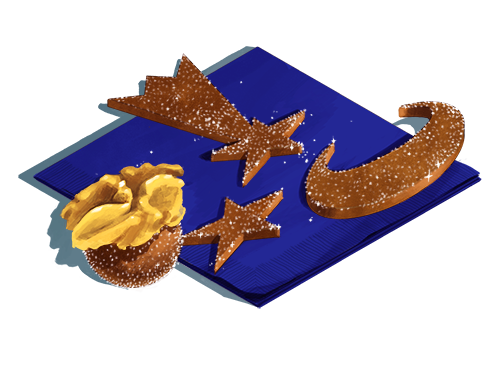

Basler Brunsli Two Ways
My new favorite Christmas cookie recipe, so sparkly and delicous!
My new favorite Christmas cookie recipe, so sparkly and delicous!
-Ingredients-
- 250g ground almonds (aka almond flour)
- 100g dark chocolate, very finely chopped
- 200g sugar, plus extra for decorating
- a pinch of cinnamon
- 1 teaspoon spiced rum
- 2 egg whites beaten into stiff peaks
- walnut halves for decorating (optional)
- Preheat oven to 300°.
- Mix the dry ingredients together. Add the rum, then fold in the stiff egg whites until combined.
- Grease the baking sheet or cover with baking parchment.
- Version one: roll the dough into little balls using about a heaped teaspoon of dough each. Dip these into a bowl of sugar and place on the baking sheet. You can decorate them by lightly pressing a walnut half on top.
- Version two: Roll the dough out until it's about 1 cm thick. Then cut into shapes with your favorite cookie cutters. Place on the baking sheet and sprinkle some sugar on top.
- Bake for 5-10 minutes or until they are lightly browned. En Guetä!